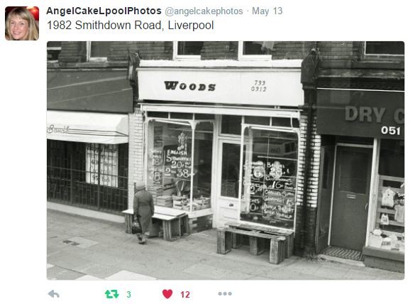

I’ve had to use counselling and therapy throughout my life to help me, especially to deal with trauma and depression. Something they’ve encouraged me to do is write, especially recording my memories, exploring both my happy and my difficult ones. Today I’d like to explore a particularly important one from long ago.
Being middle-aged, and having moved around a lot, I have many memories from different places, some going back to my early years. Most of them are well behaved and remain in a state of slumber... and sometimes one will need a little jog before it goes back to sleep. The traumatic ones play by different rules, and are often the reason why I’m in therapy, but they’re a story for another time.
This was the Twitter picture which triggered one of my bittersweet ones which I want to explore today,
The Tweet in question
My partner Col and I have been together for almost twenty years now. That’s so long that it’s easy to take for granted. But a memory of Liverpool is enough to stir those of our early days together.
I always found dating and relationships awkward until I met Col when I loved to Liverpool, a place they'd known as home all their life. With Col there was never any need for pretense. In came this amazing human being with an incredible energy and personality to both match and, at times, complement my own. We were both incredibly passionate people, although that passion hasn’t always aligned at times, and can cause rough waters. But when we’re in agreement, things are incredible.
Not surprisingly, it’s been an important relationship - they always challenged me to be more than I could, an odd mix of loving me and pushing me. But like many in a long-term relationship, I’m sometimes guilty of taking them for granted.
And that’s where the picture came into play. When we first dated, there was in those early days a bittersweet ritual we had to live out.
Col’s parents were quite traditional, and we never wanted to upset or shock them. So, although they often stayed with me, they could never stay the night, having always to be back home come the morning.
Thus, in the early hours, typically around 4am, one of us would wake in the other’s arms. We would be wrapped together, partly from our passion for each other, partly from the necessity of two adults sharing a single bed. Driving them home through the dead of night in Liverpool was always such an eerie experience - a city so vibrant during the day, so empty and desolate in those early hours.
The city slept whilst two lovers prepared to farewell each other.
We rode mainly in silence, occasionally Col ghoulishly pointing out a street corner where a gangland slaying had occurred. It was all to take our mind off the goodbyes to come. Alone in the early morning, it felt we wrote out a testament to our love on the streets, as each red light in our path was an opportunity to hold their warm hand in the bracing morning, or to steal another kiss while we could.
All too soon they would be home, and I’d face the lonely journey home. All the time thinking what a wonderful thing it would be to be able to wake up in the morning together.
It was like living in a fairy tale - I had someone I loved and who loved me very much, but I always had to give them up before the dawn...
These days, I like Sundays the most. Sundays, there are typically no alarm clocks, no pressing reason to get out of bed. Most Sundays, you’ll find me awake, but lying in bed, next to Col, and remembering how to my twenty-something self, waking in the morning next to them was all he felt I longed for to make me happy.
I think one of the saddest things about being human is we yearn so much for things, but when we get them, we so rarely get to enjoy them or appreciate them. All too often, one sense of want is replaced with another – and it leaves us forever hungry and insatiable for some desperate need, leaving our enjoyment of what we have fleeting.
Sometimes the right memory will help you remember how much what you have now is all you ever wanted.
Find yours and never take it for granted.